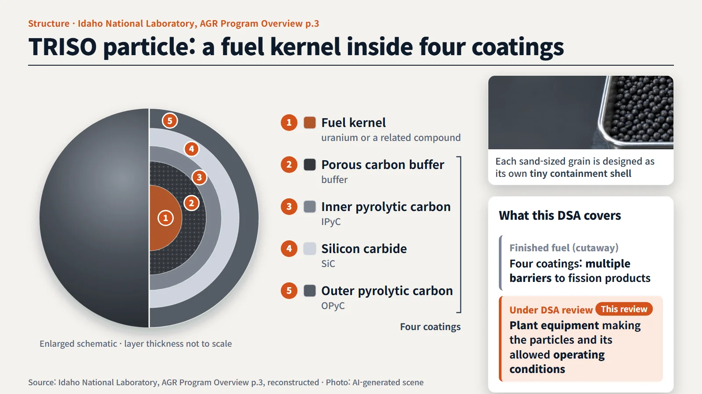
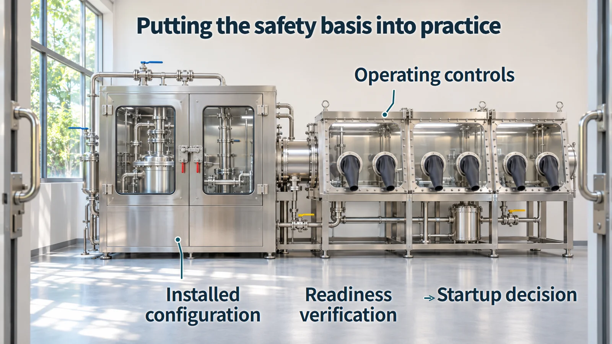

Fuel fabrication safety
Safety Review and Startup Readiness for the U.S. TRISO Fuel Fabrication Facilities
Standard Nuclear submits final DSAs for DOE review; separate readiness checks precede startup.
Final DSA submissions for the Tennessee and Idaho sites and the public milestones to the DOE readiness review
A new generation of nuclear fuel for small modular and high-temperature gas reactors is moving through an unfamiliar approval path, and many readers want to know how far it has actually come. On 23 November 2026 Standard Nuclear disclosed the status of the final Documented Safety Analyses (DSA) for two TRISO fuel fabrication facilities in Tennessee and Idaho. This post looks at what the filing confirms, what it leaves open, and which public milestones still stand between the submission and an operating fuel line.
Safety Analyses Filed by the Two Fabrication Facilities
The first details worth pinning down are the filing dates and the review status. Standard Nuclear submitted the final DSA for its Tennessee site (SN-TN) on 6 November and for its Idaho site (SN-ID) on 12 November to the U.S. Department of Energy (DOE). Both facilities are classified as Hazard Category 2 nuclear facilities, and as of the 23 November disclosure both DSAs remain under DOE review and are pending approval.
Each site already cleared an earlier step. According to the company, DOE approved the Preliminary Documented Safety Analyses (PDSA) for both facilities in July. The November filings are the follow-on final submissions. Standard Nuclear stated that the second submission (Idaho) used the same document structure as the first (Tennessee). In other words, the plant designs are close enough that the safety analysis documents could share the same skeleton.
What the disclosure does not provide is just as important. Individual approval dates and startup dates for the two sites have not been disclosed. The company's reference to meeting 2027 fuel production orders is framed in the underlying report as a corporate expectation that depends on DSA approval and subsequent steps. What this means in practice: both facilities have moved onto the review table together, and the next publicly verifiable data points are the site-by-site DOE review results.
The Particle's Coatings and the Plant's Safety
TRISO stands for Tri-structural Isotropic particle fuel. Each grain, roughly the size of a sand particle, is designed to act as its own tiny containment shell. At the center sits a fuel kernel (made of uranium or a related compound), surrounded by four coating layers applied in sequence.
Idaho National Laboratory's AGR Program Overview (p.3) shows the central fuel kernel surrounded, in sequence, by a porous carbon buffer, an Inner Pyrolytic Carbon (IPyC) layer, a Silicon Carbide (SiC) layer, and an Outer Pyrolytic Carbon (OPyC) layer. The figure presents the four coatings together as multiple barriers against the release of fission products. Quantitative per-layer performance, any ranking among the layers, and the precise individual function assigned to each layer are set in the broader qualified irradiation record rather than being readable from this schematic alone.

One point deserves emphasis. Those four layers describe the finished fuel. The DSA now in front of DOE concerns the plant equipment that manufactures the particles and the operating conditions that plant is allowed to run under; particle performance belongs to a separate qualification record. As the underlying report puts it, the submitter has to show how the safety basis is implemented in the actual equipment, management programs, and procedures. The takeaway: the particle's performance and the plant's safety analysis address different objects, and this review covers the plant side.
From Safety Analysis to On-Site Controls
A DSA approval is a prerequisite, with a separate readiness review and a formal startup decision to follow. The report points to DOE-STD-1271-2026, the standard that DOE's Office of Nuclear Energy uses for a streamlined authorization pathway. Under that standard, the final DSA and the accompanying Technical Safety Requirements (TSR) together define the safety basis and the operating controls. Fabrication facilities and test reactors are among the facility types covered, with site-specific requirements set by the responsible office, the contract, and the agreed safety standards. Whether the two Standard Nuclear sites have chosen this specific pathway has not been disclosed by the company.

The standard describes three things the review has to check. First, as-built condition — whether the equipment actually installed matches the assumptions in the approved analysis. Second, design-versus-field deviations — whether departures from the design are evaluated and documented, and how they would affect the analytical results and the control measures. Third, operational controls — whether the final safety management programs, procedures, and designed operating limits have been translated into instructions that workers can follow.
This is where the company's remark that the two sites "used the same document structure" takes on practical meaning. A shared design lets the safety-function descriptions be held in common. Yet the two plants are separate facilities on different sites. As the report explains, any deviations from the common design that affect site configuration or approval conditions are evaluated against that facility's own records. The company has not disclosed the construction order or the specific per-site deviations. The upshot is that the review will separate what can be reviewed in common from what has to be reviewed site by site, and only the latter determines each individual approval.
Items to Watch in the Startup Readiness Review
A DSA approval is a significant gate, but the decision to start the plant sits in a later, separate procedure. DOE's standard has the contractor prepare the DSA and DOE approve it, after which the contractor implements the approved basis at the site and enters readiness activities. A separate readiness directive, NE O 425.1, Verification of Readiness, applies at that stage and requires resolution of pre-startup findings, compensatory measures, and a post-startup corrective action plan.
The formal startup decision takes the form of a written startup approval memorandum — the Approval to Proceed Memorandum — issued by the Startup Approval Authority (SAA). That memorandum authorizes operation of the specific facility it covers. The DSA submission date, by contrast, marks the day the safety analysis was handed to the reviewer. The two dates belong to different steps.
In sum, there are four public reference points that let a general reader track each site's progress: (1) facility-specific DSA approval, (2) implementation of the approved controls on site, (3) the outcome of the readiness review, and (4) the Startup Approval Authority's (SAA) decision. Today's disclosure covers only the first upstream point — the submission itself. Dates and conditions for the later steps will appear in later releases. The implication for the 2027 production outlook is straightforward: Tennessee and Idaho supply capacity will track the accumulation of these four public references rather than follow automatically from DSA approval.